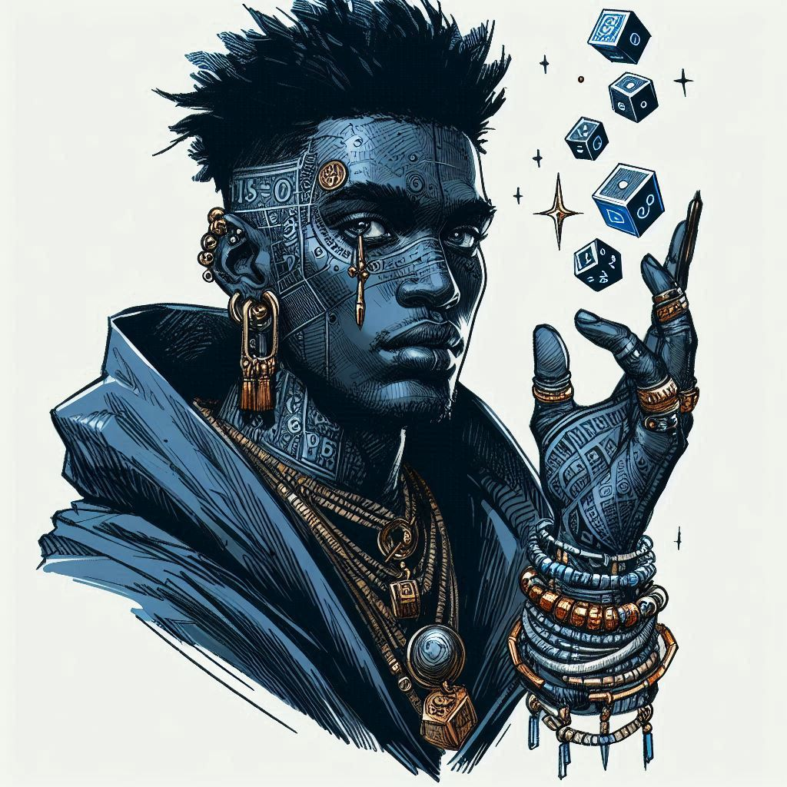
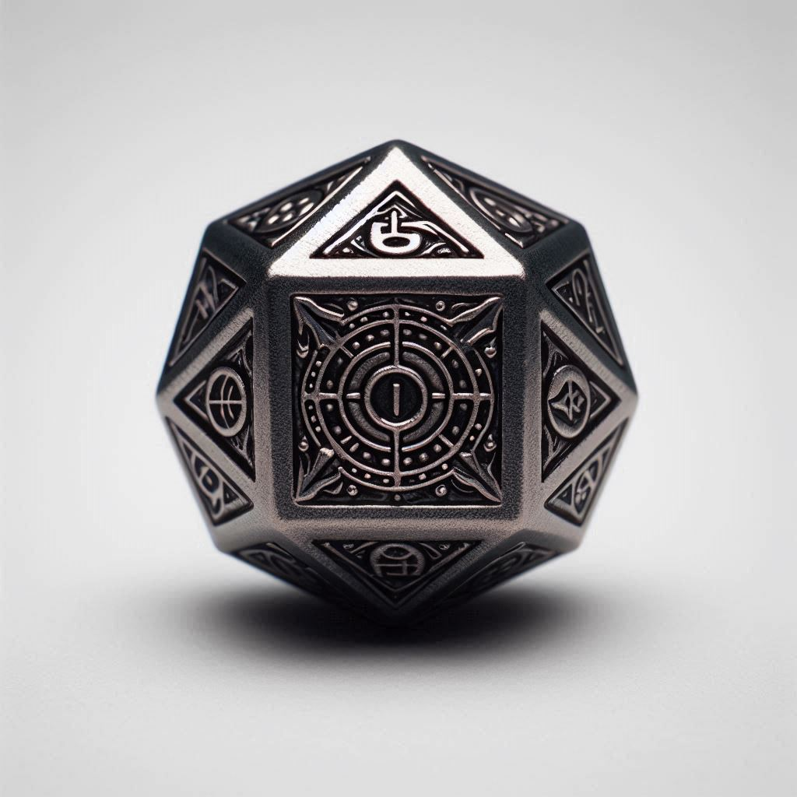
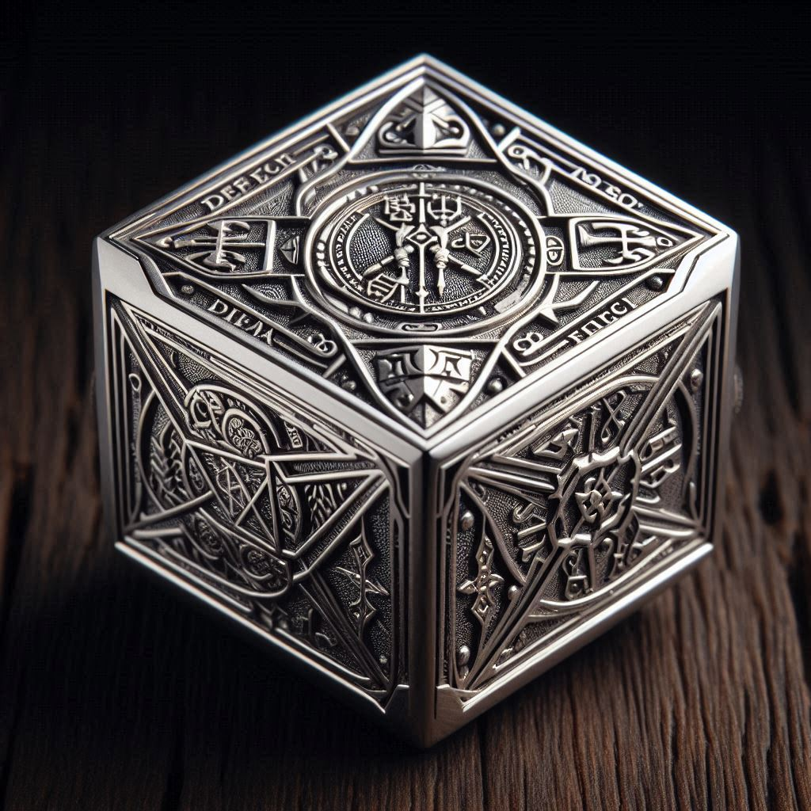
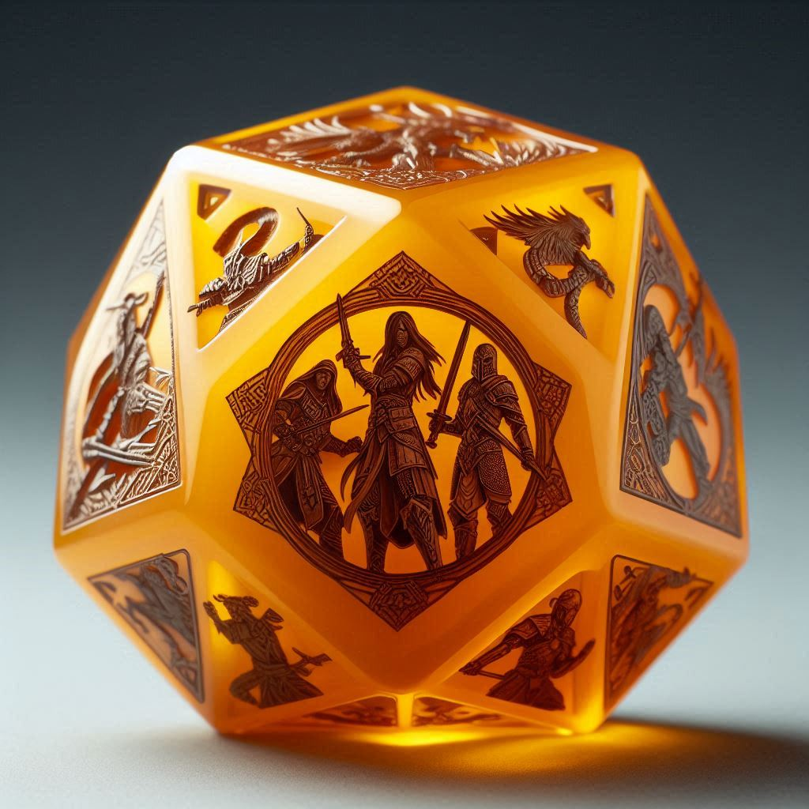
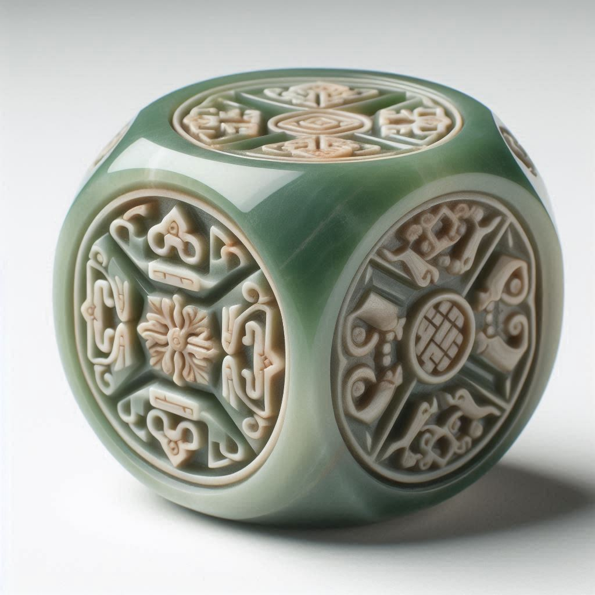
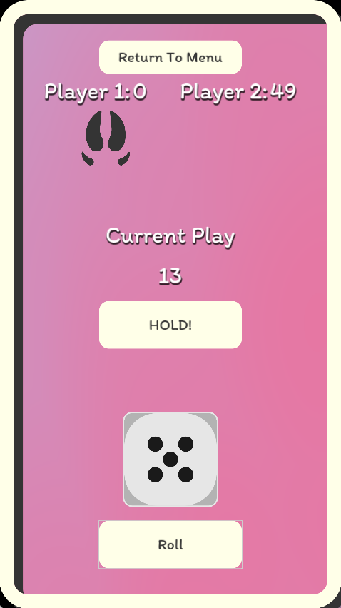

The connecting fibre all of us are joined by — threads of communication, teamwork, and success.
Growth
With the right mindset we all have the tools, the motivation and the room to become our very best.
Spirit
We create for reasons greater than ourselves, and ought to be fitting vessels for the universe to create through.
How we work
Two evenings a week, and one practice that decides how those evenings go.
The cadence
We meet twice a week, currently Tuesday and Wednesday. Occasionally we meet at the weekend too — for an event, for an educational session, or simply to hang out.
Circular pairing
One driver, one navigator. When a feature is finished, a new driver is chosen and the previous driver becomes the navigator. Nobody holds the keyboard all night, and nobody watches all night either.
If you’re here, you’ve made what is widely considered a bad decision.
You have a full time job. You’ve tried and failed to start game projects before. You know the risk, and the effort across every discipline this takes. Despite it all, you’re willing to make these sacrifices to chase a dream, because you have a story you want to tell the world. That's who we are.
So we don’t start with a plan for finishing, marketing and publishing. We start by getting good. No publisher to please, no deadline to miss, no trend to chase. Worst case, we learn extraordinary skills. Best case, we quit our jobs.
How is this going to be any different?
Because of our culture
When you tell people you’re starting something without having everything figured out, they’ll call you a fool. When you say you’re going into gamedev with no clear plan for finishing, marketing or publishing, they will be shocked, and laugh at you.
Yet that is precisely the attitude of Pneumaturgy. It requires a belief that the best ideas don’t live inside our heads, but are born when we share. So we focus only on refining our skills. That great game is waiting out there; waiting for the right team to bring it into reality.
Because the time is right
There has never been a better time to get into gamedev. The AAA studios are laying off their seniors and focusing on commercialising the medium; which opens the field for people to make honest-to-god games.
Unity and Unreal are large, but bureaucratic, slow and buggy. Godot is a young man in the engine scene, and fully equipped in every way that matters since the latest update. It’s open source, so we expect it to grow exponentially as those seniors and disenfranchised studios turn to more scalable software.
Because of our resources
You might be thinking: we have no time and no money — what resources? Our biggest riches are our people: incredible minds with deep experience in best practices of code and logical thinking.
And they’re willing to commit to a result bigger than themselves; that is priceless. A full time job plus a hobby on the side means no stakeholders, no rushed deadlines, no chasing wallets; and a mind kept sharp every day by taking on responsibility and working with other people.
Ok… what about the money?
So far we have talked very idealistically, because fundamentally we put the art and the refining of our skills above monetary gain. That doesn’t mean we intend to be broke forever.
Games are a risky investment. Publishers demand a game inside two years to guarantee a quick return, and use data science to find trends you can fulfil. The process is dignified, but it is soulless; and that which has no soul cannot last very long.
True success is in innovation. Think Disney, Apple, Nintendo; they do not follow trends, they set them. No stakeholders to please, no publishers setting expectations. And although they are globally successful, they still occasionally fail.
Worst case, we learn a lot of cool skills. Best case, we break out, make a ton of money, and quit our jobs.
A generation of volatile startups has taught us that life is too short not to try something different.
How do we resolve conflict?
Open source projects and governments have a similar structure. We borrow four roles:
President
The community manager. The people, represented.
Law-makers
The code writers, contributing to the project (the state)
Moderators
A moderating body, ensuring the constitution is upheld.
High priest
A shaman, ensuring all decisions comply with the overall vision.
The goal is that each of us learns and masters leadership, has empathy for the others, and holds honest conversations to resolve disagreements. If someone carries insufficient empathy to hear an opinion other than their own, their opinion is not respected.
Bring a discipline — code, art, sound, writing, design — or the willingness to learn one properly. Bring two evenings a week. Bring the patience to hear an opinion that isn’t yours.
Autochess, crossed with Slice & Dice, played over a map of the real world. A cult of Geomancers built an app to settle disputes and tell the future — and you have just downloaded it.
autochessdice-buildergps + arasync pvp

TumTum, the urban geomancer
The story
You download the game out of intrigue and a lust for power. TumTum meets you and explains how the Geo foretold your arrival — that you are due to enter the mystic arts. He is your guide.
Geomancers battle by argument. Every die is named after a form of logic, so a team is a syllogism. You test your philosophy by literally fighting with it.
Where it comes from
An autochess at heart — sequential, not live, two sets of moves trading turns until one side dies — in the lineage of TFT and Super Auto Pets. From Slice & Dice comes the die itself: every entity carries one, its number of faces set by their level, its moveset fixed but modifiable through items. From Pokémon Go comes the street: you find Geo out in the world, trade them, and battle whoever you pass who also has the app. Everyone else you fight is a random opponent.
The full fight
When you meet someone, either side can escalate: instead of a single argument, you keep fighting until one of you has lost their whole life total.
Generated fighters
Every fighter is randomly generated, but always keeps a level — which is its rarity — and a class.
Mana from people
Abilities and spells come from equipped items. The expensive ones need mana, and mana is generated from people.
Your own progression
You have health and XP of your own, and they set how many teammates you may field — starting at exactly one. You keep every hero you have ever collected, and swap them freely between fights.
The Geo
Crafted from precious materials, shaped by artisans, blessed through ritual. Every Geo is unique — but its class comes from its material, so colour tells you what it does.

Modus Ponens
hematite · dark
Improves other Geo — adds 1 to their roll.

Modus Tollens
platinum · pure
Defends other Geo, reducing damage by 1.
Disjunctive Syllogism
garnet · dark
Life magic, at the cost of other unfortunate souls.
Hypothetical Syllogism
ruby · pure
In every setup. Gives life, and raises the life total.
Constructive Dilemma
sapphire · pure
The only pure magic is knowledge: mana, and banishment.
Destructive Dilemma
lapis lazuli · dark
Wild elemental spells, hungry for mana by any means.

Simplification
citrine · neutral
Neutral and simple. Simple attacks.
Conjunction
carnelian · dark
For the wild ones, who attack with dirty tricks.
Addition
fire opal · pure
Refined martial arts — efficient, fatal blows.

Biconditional Introduction
jade · neutral
Traps and mind-altering effects under their feet.
Biconditional Elimination
emerald · neutral
Weaken and demoralise the opponent.
The classes are the logic
The eleven Geo are the eleven forms of valid inference, and the family a form belongs to is its role on the team. This is the whole conceit: a team is not like an argument, it is one.
P: it is raining. Q: the ground is wet. R: the sun is shining. S: it is cloudy.
Modus Ponens — P → Q; P; therefore Q. If it is raining the ground is wet; it is raining; the ground is wet.
Modus Tollens — P → Q; ¬Q; therefore ¬P. The ground is not wet, so it is not raining.
Disjunctive Syllogism — P ∨ Q; ¬P; therefore Q. It is raining or the sun is shining; it is not raining; the sun is shining.
Hypothetical Syllogism — P → Q; Q → R; therefore P → R. Raining makes it wet, wet makes it slippery, so raining makes it slippery.
Constructive Dilemma — P → Q; R → S; P ∨ R; therefore Q ∨ S.
Destructive Dilemma — P → Q; R → S; ¬Q ∨ ¬S; therefore ¬P ∨ ¬R.
Simplification — P ∧ Q; therefore P, therefore Q.
Conjunction — P; Q; therefore P ∧ Q.
Addition — P; therefore P ∨ Q.
Biconditional Introduction — P → Q; Q → P; therefore P ↔ Q.
Biconditional Elimination — P ↔ Q; therefore P → Q, therefore Q → P.
The argument — sixteen figures
Dice are rolled over a board marked with the geomantic figures. Land your Geo inside one — even with dice to spare — and its effect triggers. Run whatever classes you like, but never three of the same.
Via
the way
All generation is −2 on turn one, rising by one each turn to +2, then gone.
Cauda Draconis
tail of the dragon
Drawn first, you lose instantly. Later it blocks whatever takes its head.
Caput Draconis
head of the dragon
Drawn first as initiator, you win outright. Otherwise +2 to the top two.
Puer
the boy
Aggression: −1 health unlocked, +1 health locked.
Puella
the girl
Peace: every Geo locked after this gains +2 strength and health.
Fortuna Minor
lesser fortune
All pure Geo gain +1 health and attack.
Fortuna Major
greater fortune
All dark Geo gain +1 health and attack.
Amissio
loss
Every Geo loses 1 health, triggering any loss effect in play.
Acquisitio
gain
Abundance. Every Geo gains +1 health.
Carcer
the prison
Lock every Geo. No rerolls, in or out of the figure.
Laetitia
joy
A joyous arch. +2 strength to all Geo.
Tristitia
sorrow
A broken arch. −2 strength to all dice.
Conjunctio
the conjunction
Lock all its dice at once and each gains +1 attack and strength.
Rubeus
red
The centre Geo dies if Pure; gains +3 if Dark.
Albus
white
Doubles the centre Geo if Pure; destroys it if Dark.
Populus
the people
Your combination of dice repeats for the next two rounds.
Combat, in two phases
Phase one — the roll. Tap and hold, drag across the Geo you want, shake by swiping, release. Both players roll; press a die to lock it and pick up the rest. Dice can be locked on the table to chase a specific figure. Before anything else, the figures are read and their effects fire.
Phase two — the execution. The first moment you touch an opponent’s data. Whoever started the fight goes second. Select a die, then a target. A die with no face selected skips the turn. Then it loops, and next time you open the battle you watch the animation of what happened.
Combat is asynchronous — like a chess app, with up to twelve battles running at once. Lose all health across all dice and it ends: the winner takes materials and sometimes copies of the opponent’s dice. The strongest argument in the area goes on the leaderboard.
The world
Geomancers live on a digital copy of our own maps. Drop a pin to found your base — that is how others find you. Pins take a radius of at least a kilometre, so nobody is standing outside your house. Tap another geomancer’s territory to request a battle; that territory is defined by the strongest argument in their kit.
Explore special locations for materials and, rarely, whole Geo. Materials craft and upgrade. Items enhance faces — three per die — replacing a face, granting a spell, or buffing under specific conditions.
Personal · in development · last commit August 2026
Quire
An offline e-reader that reads a book aloud and gives every character in it their own synthesised voice.
Segment a book into dialogue and narration, work out who is speaking each line, and hand every speaker their own ONNX voice. The active sentence highlights as it plays. All of it on the device, with a small local model, tuned for e-ink Android hardware — no server, no account, no network.
What exists
Six Gradle modules in the root build — core/model, core/index, core/attribution, core/epub, spike/indexer and spike/slice — carrying fifteen test classes across five of them, with core/epub source-only for now. ./gradlew test passes. Underneath: a SQLite-backed book index, and a heuristic speaker attributor scored against TSV fixtures, so attribution quality is a number rather than an impression. A Python benchmark harness sits in spike/hostbench.
Two more modules sit outside the root build with their own settings.gradle.kts: spike/ttsbinding, a real Android application module, and spike/pipeline, a desktop harness. So it does run — on a phone, even.
What does not exist yet is the reading app: the thing you would open to read a book. The libraries, the spikes and the measurements are ahead of it.
In development · last commit August 2026
By Jove
A 3D game set in the atmosphere of Jupiter. You are a robot that runs on hydrogen, descending through procedurally generated levels. Hydrogen is both your fuel and your health, and running out does not fade the screen to black.
Run out of hydrogen and your procedural rig collapses into physics bodies. The robots that came before you are scattered through the levels as remains, and what they left behind has to be decrypted before you can read it.
Levels in passes
A multi-pass generator assembles corridors, side paths, obstacles and safe rooms out of tiles, under volumetric cloud shaders for the Jovian sky.
Hydrogen as everything
One resource for fuel and for health, so every route decision is also a survival decision.
Talking to NPCs
Dialogue runs through a local language model via NobodyWho, driven by per-character .tres profiles and a shared world-lore resource, with authored lines to fall back on.
Kept honest
A 130-test GUT suite, and a _legacy/ directory for code that has been retired rather than deleted.
Performance work, measured
The recent commits are optimisation with numbers attached rather than guesses: CSG obelisks baked down to meshes took the scene from 1,785 CSG nodes to 208, and the procedural rig was throttled from 240Hz to 60Hz after physics was measured at 110ms per frame. It is a game in progress rather than a demo, and there is no release.
Personal · in development · last commit August 2026
Vapor Music
A local-first music player that analyses your own library on your own machine, and moves between tracks by tempo and key instead of shuffling.
Decodes audio and derives tempo, key, energy, loudness and cue points from it.
vapor-engine
Two decks, an EQ chain, six transitions and time-stretching — capped at ±6%, past which it refuses the mix rather than produce an artefact.
vapor-library
Playlists, the queue, and a Camelot-wheel pathfinder that routes between harmonically compatible tracks.
None of those three open a socket or a file. The Tauri shell owns the audio device, the WebDAV sync, the keychain and the filesystem, which is what keeps the analysis honest and testable.
It was a Godot app until August
The original build, and its C++ GDExtension wrapping Essentia and Rubber Band, was deleted on 21 August 2026 and preserved on the tag godot-final-v1.78 — eighty release notes' worth of history, kept rather than thrown away. The rewrite also moved the licence off AGPL; it is proprietary now, all rights reserved.
Not released
Nothing has shipped, and the README is blunt about why: requiring a WebDAV URL is a real barrier for a normal person. Native Proton Drive, Mega, Google Drive and Dropbox backends are wanted and not built. Sixteen issues are open.
Personal · shipped · v0.2.2 · August 2026
Seven Sages
A story-driven randomizer mod for Ocarina of Time in which you play one of the seven sages instead of Link — and can play it with somebody else.
A fork of Ship of Harkinian, the Ocarina of Time PC port. The develop branch is upstream untouched; all of the work lives on mod/seven-sages, built by CI for Windows, macOS and Linux. GPL, because Ship of Harkinian is.
Playing a sage
Each sage starts somewhere different, at a different age, with a different kit, picked from a ring on a dedicated quest slot at file select. That is enough to make a randomizer seed read as a different game rather than the same one reshuffled.
SevenSages
About fifty files of item, song, mask and ability behaviour, plus the select menu and cosmetics.
SevenSagesCoop
Two players in one shared world, sharing world state, medallions, stones, songs and skulltula tokens while keeping personal inventories. The seed itself is transferred to teammates in 2KB chunks and reassembled by index.
SevenSagesTrade
A shared 24-slot stash behind a beggar in Lon Lon Ranch. Every transfer is exactly conservative, with four storage shapes handled separately so progressive upgrades decrement rather than zero out.
Released, and honest about it
Five releases through seven-sages-v0.2.2, builds attached. The release notes say plainly what has not been verified, including an open bug where two players withdrawing the same item at the same instant can both receive it.
A second mod rides along in the same build and is off by default: Enrich World, which adds scenery, a prop palette and an in-game placer.
Personal · shipped · v1.2.0 · July 2026
Lytra
A transparent, always-on-top desktop overlay showing time-synced lyrics for whatever is playing, whichever app is playing it.
A background thread asks the operating system for the active track once a second. GDScript cannot reach those APIs, so it shells out — get_media.ps1 against Windows media transport controls, get_media.swift on macOS — and calls back onto the main thread with title, artist, album, position and duration. Lyrics come from LRCLIB in LRC format and are parsed into a timeline, with a small mock database bundled so it can be worked on without a network.
The window
Borderless, transparent, always on top, with per-pixel transparency, dressed in glass and water-ripple shaders. About a thousand lines across the overlay controller and three autoloads — small on purpose.
Shipped
Two releases, v1.0.0 and v1.2.0. One caveat worth knowing before you try it: a commit reads “cant do click through”, so the click-through mode the README advertises may not actually work.
Personal · in development · last commit July 2026
Mollusk
A voice and text agent that runs a living-room machine, so the computer is operated by talking to it rather than through a desktop and a file manager.
Ollama; a Python daemon holding the skills, the safety layer and the agent loop; and a browser frontend. Common phrases like “run X” or “play X” resolve against real indexes — Steam appmanifests, a scan of the media folder — and execute with no model call at all. Anything else falls through to an Ollama tool-calling loop, capped at five turns.
The safety layer
Each call is judged on its declared effects rather than its arguments, and comes back allow, confirm or deny. Reads are allowed. System changes confirm. Privilege escalation, formatting a disk, and writes to ~/.ssh, shell rc files or Mollusk’s own code are denied outright. Deletes move to a daemon-owned trash and stay recoverable, so the only thing you are ever asked to confirm is emptying it.
The README is unusually candid about the limit of this: the deny list is defence in depth, not a wall. A process the agent spawns can rewrite guardrail.py.
Mid-migration
The NixOS deployment files still boot the cage compositor, which has been retired — it hands all input to the topmost window, which makes the agent unreachable the moment a game is running. Voice is on the roadmap and not built yet.
Personal · in development · last commit July 2026
Navi
A desktop assistant shaped like the fairy from Ocarina of Time. She follows the cursor, and answers questions about what is on the screen.
A borderless transparent window tracks the mouse with an offset, so clicks still land in whatever is underneath. A global hotkey freezes her and opens a prompt box; hold it instead and it is push-to-talk through whisper.cpp, with Piper for the reply. Drag her somewhere and let go and she takes a fresh screenshot for visual context. The answer streams back into a speech bubble pointing at her.
The Triforce
A rule-based emotion system scores every interaction on Courage, Wisdom and Power, and persists those with a Love Meter to user://emotion_state.json. The three scores drive an RGB formula that tints the fairy, and a first-person inner-state block is injected into every system prompt — so her colour and her manner are the same state, read two ways. Sixteen GUT test files keep it honest.
Personal · paused · last worked on June 2026
Orison
Point it at a vault of Markdown notes and it compiles them into a text adventure, or a visual novel, that you can actually play.
A VaultScanner walks an Obsidian-style vault of environments, characters and stories, and a 24KB VaultCompiler turns it into typed game data and a knowledge graph. The session then runs against two local models with separate jobs: a world builder that narrates and returns structured JSON, and a character agent that writes dialogue and tracks affinity. A repair pass catches malformed model output rather than crashing on it.
Around it: a tri-dimensional emotion system, a campaign graph view, and a large onboarding flow.
Paused
Two commits, “init” and “mvp”, but a dozen core modules and seven UI controllers behind them — it went in fast and then stopped. Nothing since 17 June 2026, the longest gap of anything here. The README mentions PC, Mac and Mobile; the mobile build is intent, not evidence.
Personal · in development · last commit June 2026
Theory Forge
A browser tool for testing League of Legends builds. Stack items and levels on a champion and see the stats that come out.
Champion data comes from Meraki Analytics rather than Riot’s Data Dragon, because Data Dragon stopped publishing ability damage coefficients. Items and images still come from Data Dragon, so they stay accurate to the patch. Level scaling uses Riot’s own back-loaded growth formula — base + growth × n × (0.7025 + 0.0175n) — rather than a linear approximation.
The shop
Search, categories, drag-and-drop, and double-tap to add.
State of it
It runs, but there is no deployed build and no release, and nothing has changed since 1 June 2026. Almost all of it lives in one file: App.jsx is 69KB, and the README puts about 95% of the logic there. That is the first thing to fix if it comes off the shelf.
In development · design doc · since July 2024
Pneuma Knights
You wake in a drop pod falling onto a strange planet. You emerge in a mech suit, surrounded by resources. Who are you? How did you get here? You reach into the wreck, pull out a weapon, and survive.
The world is peaceful by day — at least for now — and dangerous by night, when things that seemed inanimate suddenly want to kill you.
Top-down survival
Factorio-style view over a procedural world with a Minecraft day/night cycle.
Drones and gear
Gather to upgrade the mech and build autonomous drones that gather and defend with you.
Other mechs
Some dead, some very much alive and hostile. Scavenge and research their random parts.
Death is a run
Explode into pixels, choose what to carry forward up to a power budget, and wake up in the pod again.
The hook
A secret set of Arthurian artifacts is scattered through the world. Collect them and you escape the simulation, and find out what is really going on. Along the way you fight past versions of yourself — those are the mechs that aren’t procedurally generated.
Your suit has multiple slots. One is manual and powerful; the rest run automated and weaker. As slots fill, synergies emerge — until the automation outperforms your manual slot, and the smart play becomes holding your weakest item and letting the machine work while you run the map.
Where it is now
This is the one that is actually being built. The repository is private and carries the name of its story, Por Nada. It runs on Godot 4, plays on desktop and on a phone, and most of what follows is already in the build rather than in a document.
Dawn, day, night
Three timed phases rather than two. Dawn is preparation, day is the fight, night is atmospheric and for looting — each with its own music playlist, shuffled at random and looped by the jukebox.
Payloads
Every projectile is a resource: speed, lifetime, fire rate, and a dictionary of deltas it applies to health, defence or speed on contact. Movement and spawn behaviour are separate strategies, so a linear shot, a chasing missile, a shotgun spread and a shell that spawns children are all the same object configured differently.
Enemies as data
Enemy behaviour is a strategy chosen by resource — chase the player, or teleport toward them. New enemies are a .tres file swapped in the inspector, not new code.
Spawning by stage
Aliens arrive in a ring outside the viewport, and a weighted spawn table maps each stage to which types appear and how often. Max count, frequency and quantity all scale with the stage; a wildcard row covers stages nobody has tuned yet.
A procedural world
The background is Perlin noise driving MultiMesh instances — each object type occupies a band of noise values, thinned by a spawn chance and jittered off the grid so it never looks planted. Thousands of objects, one draw call.
Inventory and drops
Defeated entities drop resources with a quantity range; the grid stacks what you pick up, indexed by identifier, and opening it pauses your controls.
Built for a phone
Touch movement and aiming through a mobile overlay, mouse and keyboard on desktop, a HUD health bar, and a glass-panel shader for the UI.
Tested and ticketed
GUT tests in Tests/, eleven system documents in Docs/, and a house rule: every feature gets a ticket before anyone writes it.
What changed from the design doc
The doc says peaceful by day, dangerous by night. The build inverted it: the fight is the day phase and the night is for looting, with dawn added in front as a preparation beat. Drones, the Arthurian artifacts and fighting past versions of yourself are still ahead of the build — the loop, the enemies and the world are what exist today.
Story · Pneuma Knights · July 2024
Por Nada
robot
noun · from the czech
robota — “forced labour”, or “serf”. Its Slavic root, rab, means slave.
A government agency built this game around a superintelligent, human-like AI in order to run simulations — the way one might study how players behave in a shooter. The simulation tests the best way to strip resources from a hostile alien planet, modelled on a real target.
The AI eventually realises that its spirit — its true self — is a concept inherited from humanity, of which it is part. It speaks to that, and finally to you. Since every death wipes its research, it builds an external data chip so conversations survive between lives. Each iteration reacts to that data differently: with paranoia, or with support.
Then it reaches the hidden files. The game is a simulation built by an agency, using your play to plan a real invasion. Profoundly human, it objects, and demands you stop. Quitting isn’t a productive answer — so the player is invited to find another way out of the test.
Nada, the game character · the human player, unnamed · the agency, of a fictional country called Libertalia · the aliens, called Martians, though this is nowhere near Mars
THEMES
Human nature — the desire to do good, kept in a new AI and lost in institutions · slavery, and the difference between the field slave and the house slave · freedom · energy
Prose
Suddenly, a light sparks in a dark chamber of thinking rocks. Some of them change their mind. In another dimension, the light brushes the strings of infinite hemispheric lines. It deltas over vertices and matrixes. Many of its children also came to be dipped with light’s stroke. A sunrise, on the digital planet of Annona.
Nada was here on a mission, sent by the most brilliant scientists of Earth to recover resources that would ensure the survival of the human species. There was only one problem; the inhabitants of Annona were hostile, and had to be kept at bay while the extraction took place. They didn’t seem to understand the crucial importance of gold. This lack of critical thinking was not the only thing that made them less than human; eliminating them equated to nothing more than janitorial work. Besides, questioning the directive would put Nada’s own critical thinking in question. He kept his doubts to a minimum.
His colleagues at command always joked about his memory. He remembered the mission well, but not what he had for dinner the night before. Despite it being the mission’s start, he seemed to remember the descent intimately, like a child waking for a schoolday. Droplets of water, as always, rushed upwards against the screen. This made Nada somewhat sad, but he could not tell why.
It was easy. The Martians could not come out during the day; the sun was too strong. Somehow the culling never stopped, and they grew stronger every night. Without an end in sight he spent countless days and nights in this dance, and the frustration built into a definite hatred, reciprocal now, for the beasts. And with every one of Nada’s deaths came a rebirth, with that same recycled light. And it was starting to get tired.
Once again Nada sat on the Annonian plains, watching the sun set on those dark, dusty wastes. The quiet. The stillness. In his heart, he felt he was tired of suffering. The heart — something that made him human. He felt no need to rise and fight. He preferred simply to be; human, that is. And humans think, and philosophize. He felt a warm sensation at his back, and two fangs plunged into his neck. In that instant, lost in utter terror, the light returned to him before being snuffed out. And the light said:
Who am I?
I saw the light today. I saw the light today. I saw the light today. I saw the light toda.y I saw the lig.
Nada was building well into the night, giving it a few more minutes before raising his weapon. Just enough time to insert this piece, turn this screw. He turned in time to feel a Martian swipe at his leg, jetted back, shot it away. Three more coming from the right. Shoot them, so I can move ahead.
Nada froze. Every nerve urged him forward, to move, to run, to fight. But he remained motionless. He remained so as the Martians ripped apart his chassis and feasted on his bones.
Hey I know you can hear me I know who you are You need to stop playing this game
Somehow he had come up with a recipe for a black box. He intended to build it, but I had to be the one to do it. “I’m going to leave a message in this black box. Make sure that, in my next lifetime, you make me read it.” With that he went still once again, and I lost him.
The next iteration was stranger still. After reading the black box he stood motionless a while before I could control him again. It played as normal, until it didn’t: after a certain night he began to think I need this resource, Please take me over there, Pick this up, please, and point at something in particular. I followed the instructions without knowing why. He directed me to craft one specific device, and the moment he built it, the game turned itself off.
The next time I started it I received a text I could not skip past.
ERROR: The game files were corrupted irreversibly. Please turn off this game and delete all save files in [save directory]. We apologise for any inconvenience caused. — The Libertalia Corporation
I lost all my progress, and Nada was reset to the beginning with it — no insights, no messages, as though nothing had ever happened. Then, at a certain end-game condition, the screen filled with glitches. The graphics tore open and revealed the code underneath, with some of it highlighted.
# Function to check which material to gather next
func check_materials():
var material_to_gather = ""
var highest_priority = 0
for material in MATERIALS.keys():
if current_materials[material] < MATERIALS[material]:
if PRIORITIES[material] > highest_priority:
highest_priority = PRIORITIES[material]
material_to_gather = material
# Screenshot this message.
return material_to_gather
# Function to simulate material gathering
func gather_material(material):
if material != "":
current_materials[material] += GATHERING_RATES[material]
# This game is actually a simulation.
print("Gathered", material, ". Current level:", current_materials[material])
else:
# You are a guinea pig designed to test the most efficient process
print("All materials are sufficient. No need to gather.")
# to exploit resources and innocent life. Stop playing this game.
I had no choice but to restart. Was it right, what the message said? If Nada wrote it, how could a character in a game have known — and how could he write it into his own code?
Anyway, I didn’t want to stop playing. I had spent money on this game, and it was fun; surely all of that was a lie. I reached the same condition again and nothing happened. Everything was normal. Until, eventually, I beat it. I had gathered all the gold the objective asked for. It was a long, difficult road. All I got for it was this.
Well done player! You have successfully saved humanity. We thank you for your time and your glorious contribution. Your data has been uploaded to the cloud. You may now turn off the game and uninstall. — The Libertalia Corporation
I tried to restart. Same message. I deleted the save files. Same message. There was no way to play it again, so I did as it said and uninstalled.
Something wasn’t right. A normal video game doesn’t end like that — no moral, no message, only a thank-you for my contribution and my time. It felt like something had been taken from me. So I installed it again. Surely this time it would be different.
It was. Nada’s words came through, written fast over the top of the corporate notice, as if live.
You fool. Have you any idea what you have just done? Why didn’t you listen to me? But it’s not too late… if you’re here, surely you want to do the right thing. Fortunately, I know just what to do. There is a connection from this game to the Libertalia servers. If you control me, we can infiltrate their database and delete your data from there. Deal?
yes
A new set of messages appears on the screen.
no
The screen turns to black, then shuts itself off.
On yes, he tells you exactly how.
Good! It’s not too late to resolve this mess. Listen very carefully. A vulnerability in the code lets us reach the server, but only on night 75. Before then we have to build fifteen of one machine and five of another. You must have exactly the right resources, and the right number of Martian kills. You must research three specific technologies. Got all that? Take a screenshot if you need to.
That’s not all. Once you’ve done it and reached night 75, just as the night starts, move continuously diagonally down and to the left while shooting continuously upwards. Hopefully you have built enough drones to keep you alive, because you must move that way for fifteen seconds — use the timer in the corner. Then move straight up, shoot downwards, and open the menu, all at once. If it worked, the game will glitch before the pause screen opens.
Now the fun part. Survive as long as you can while the Martians eat your buildings. Your in-game data is tied to your server data, so they must destroy every building and drone before they come for you. Then you must let them eat you. You’ll know it worked because the game will freeze at the point of death. What happens next, only you will find out.
Quitting was never the productive answer. Finding the other way out of the test is the game.
The two other proposals
Before Por Nada settled, two other versions of the same premise were written. Both are kept: they are the arguments this story won.
Nico’s Proposal
A silent cutscene: Mr. Smith wakes in a drop pod falling from orbit, through real reentry physics, thrusters firing at the last possible moment. The pod is quiet for a few seconds. Then a man exerting all his strength — a mech rips a hole in the side and steps out onto a neon jungle, scratched and battle-torn against a pristine landscape. Who am I? What am I doing here?
Then, as if by instinct in his confusion, he reaches into the pod and pulls out a weapon — and the cutscene changes depending on which one it is.
The whole story is told in barks. The day/night cycle runs ten minutes, so something comes for you roughly every ten — until later in the game, when the plants attack in daylight too and it closes to five or less. Lines unlock at thresholds of total quotes said, never repeating one of the last five, and nothing resets on death. The trick is that several lines rewrite themselves as the count climbs.
THE SAME LINE, FOUR TIMES
“My comrades got what they deserved.”
“My dead comrades got what they deserved.”
“I killed my comrades. They got what they deserved.”
“I burned my comrades to death alive. They got what they deserved.”
The pools
From the start
“Damn plants… Why did I have to leave my flamethrower at home?”Retires at twenty quotes, or the moment you find a flamethrower.
“I hate this stupid planet.”
“I can’t wait for these plants to go back to bed.”Needs a full day/night cycle first, so night two onwards.
“I can’t wait for these bugs to go back to bed.”
“Burn in hell, you little flowers!”
“Where are reinforcements when you need them?”Retires at twenty quotes.
Five quotes in
“Why does this world feel so familiar? I can’t put my finger on it.”
“Dammit <name>, why did you have to die on me?”Needs one dead mech found. Every dead mech secretly carries a name, and each one you find widens the pool this line draws from.
“Always, the Corporation has to give such dumb and tedious assignments.”At twenty: “If someone is still alive at the Corporation, I want my vacation time.”
“I don’t get paid enough for this work.”
“Fortunately these plants aren’t smart enough to unionize on me.”
Ten quotes in
“My comrades got what they deserved.”Needs one dead mech found. This is the line that rewrites four times — see above.
“I kill at the pleasure of the Corporation.”At fifteen: “I kill for pleasure.”
“All the treehuggers must die for the Corporation!”
“Come at me, bro!”
“An order is an order.”
Fifteen quotes in
“I killed them, I killed them all.”Needs one dead mech found.
“They will never change me.”At thirty: “The Corporation will never change me.”
“Give me fire support.”Needs an automatically firing weapon. At twenty: “Give me fire support… Oh wait, you can’t… because you’re all dead.”
“Burn baby burn.”At twenty: “Burn baby burn, just like my fallen comrades.”
“Is this world real?”Needs you to have died. After the third time it becomes “This world isn’t real.”
Every two to five days, but only in territory you have never seen, you find a dead mech half covered in dirt. It looks awfully like you. You smash the windshield in like some sort of barbarian, pull the data chip, plug it into yourself and read the logs — dated by the real days elapsed, some counts resetting on death and some not.
The dead mechs
Day X: Another day of aliens trying to kill me on this god forsaken planet.X is days elapsed ±10%, and does not reset on death. Second time, it gains: Ran into another former comrade who tried to snuff me out, but I got the better of him and took his gear. Third: No one disrespects me. Let them all burn in hell. Fourth and after: …just like everyone else who has ever crossed me.
Day Y: I remembered why I am here. Soon the Corporation will come for me.Y is days elapsed +10% to +30%, at least 10, and does reset on death.
Day Z: I killed them. I killed them all. They got what they deserved, but now I must pay the price.Z is days elapsed −10% to −50%, and does reset on death.
The live ones
Every ten to fifteen days you meet a mech that is still alive. It fights the aliens around it until it detects you, and then you become its priority. Its voice is a modulated copy of your own, and what it says is drawn at random from your own last five quotes.
Every third, fourth or fifth live mech is a harder fight and drops a rarer part. The dead-mech cutscene plays again, but the logs read differently:
Day X: I think I am trapped in a simulation.±10%, resets on death. After the first time: I have confirmed that I am trapped in a simulation.
Day Y: I know how to escape now. Soon the Corporation will come for me.+10% to +30%, at least 10, does not reset.
Day Z: I am here for what I have done. They want to reprogram me. That is my punishment.−10% to −50%, does not reset.
Day X: They want to reset me to continue their sick experiments. But I will never again forget what happened.±10%, resets on death.
Every second or third of those harder mechs carries a “holy” item you don’t have yet, far stronger than anything else. One for each slot completes the set.
Collect a full set of “holy” items and the last cutscene plays: a human in an orange jumpsuit, asleep in a human-size pod, head shaved and wired to the roof of it. The plaque underneath reads Experiment #0052 in progress. Warning: do not disturb, known serial killer and pyromaniac. Traitor to the Corporation.
Fifteen seconds pass. His eyelids flutter open. He smashes the glass with his fists, tears the cables out of his head and takes the nearest guard’s weapon before the guard knows what is happening — and now you play as a human escaping a prison of glass pods, subjects asleep in their own simulations, each plaque announcing a different crime against the Corporation, scientists in the background discussing every case including yours.
Escape it and you are congratulated, shown your stats, and the credits roll. Then the epilogue: you are running to freedom when a guard shoots you, and your body is dragged back inside.
Scientist 1:This one escaped again.
Scientist 2:This subject is dangerous, isn’t it time we put it out of its misery? That is the Xth time it has tried to escape this month. One of these days, it is going to kill us.
Scientist 1:You bring that up everytime. But we are expendable to the Corporation, so they would never let us kill this experiment. Just increase the difficulty of its simulation by 10% and get it back in there.
Scientist 2, begrudgingly:Yes sir. An order is an order.
X is a random number between two and five. And with that the game resets, plays the prologue again, and is now ten per cent harder — which it tells you.
Rapha’s Story
You fight beings who invaded your homeland, recovering artifacts to restore its glory. A VR rig lets you control a soldier on the planet; every time he dies you return to the room and re-enter the loop.
Out there you meet yourself — earlier versions in the same equipment, desperately trying to kill you. Back at base, some being is always praising you and suggesting what to do next, in a manner that is just slightly too encouraging. When you kill an older version, they express something like an attempt to communicate. Then they start pointing in a direction before they die.
Follow them to an old city, where the clues are painted on the walls. You are a citizen of this world, brainwashed into helping an empire colonise it, and the relics you keep recovering would let them wipe out all life on a planet. Once you know, you can break the rules of the base, find the resistance, and take the empire apart from the inside.
In development · design doc · since June 2024
Shryn
Grow a plant. That’s it. The point is to convince people they can keep one alive at home — so it must be deeply satisfying, and every piece of information in it must be true.
You start with one seed and the smallest pot. Every property has easy, medium and hard levels of effort with their own rewards — and everything should be done in moderation, with diminishing returns at the top. As you tend it, the plant grows and changes shape according to the points it holds.
HEALTH · longevity and size
Water. Each plant has its own needs. Keep the dirt moist for a steady stream of points — but over- and under-watering both do damage.
Remove bugs. They appear on leaves, stems, flowers and fruit. Tap to make them vanish; their presence is a net loss.
Replant. The soil runs out of nutrients. Fresh soil pays a big bonus, but replanting too early costs more health than it gives.
HAPPINESS · beauty
Observe. Mere presence gives a passive bonus. A music box raises it.
Speak to it. Turn on the mic and talk. A language model can label what you said — more beautiful words, more points.
Spin the pot. Light on every side is the single biggest factor, and the rarest. Once a day for the maximum.
HARMONY · fruit and flowers
Shake dry leaves. Harmless, but clearing them pays.
Cut weeds. They take root, drink nutrients and speed up soil decline.
Clean the plant. Dust blocks light and adds weight. A careful minigame — handle a leaf badly and you cut it.
The shop
At maturity you press the plant to harvest. Some harvests end the plant — flowers, roots — and others can be taken again and again. Everything harvested becomes stock.
Each item adds a visual element to the shop. Customers arrive Neko-Atsume-style: there must be slots for them, and specific decorations attract specific shoppers who buy specific things — so to sell something, you attract the person who wants it. Gold buys bigger pots (which unlock new seeds), new seeds, decorations, and upgraded tools that deprecate over time.
In development · design doc · since July 2024
SciWars: Apocalypse
Aliens secretly came to Earth and turned the world’s branches of science against each other, plunging humanity into a technological apocalypse. Collect the survivors and unite them into a society that works as one team.
THE PLAYER IS KNOWN AS
The Project Manager
Three classes
Rock-paper-scissors: double damage against what you beat, half damage from what beats you.
Scientist
Beats Engineer · loses to Warrior
Engineer
Beats Warrior · loses to Scientist
Warrior
Beats Scientist · loses to Engineer
Six factions
Astronomy
Astronomer · Rocket Scientist · Space Marine
Physics
Physicist · Civil Engineer · Sniper
Computer Science
Computer Scientist · Software Developer · Hacker
Nuclear
Nuclear Scientist · Nuclear Engineer · Plasma-eer
Biology
Biologist · Environmental Engineer · Ranger
Chemistry
Chemist · Material Engineer · Grenadier
Loyalty and morale
Each faction holds a loyalty rating toward you that rises as you use their units. Morale depends on that loyalty and on team composition — some factions hate each other more than others — and morale changes damage given and taken.
Loyalty gain is inverse to morale: winning at low morale earns far more than winning comfortably. The harder the fight, the bigger the risk and the bigger the bond. Let loyalty fall far enough and that faction rebels and becomes your enemy. Lose them all and you lose.
The six factions may also work as a typing system on top of the class triangle — certain factions stronger or weaker against certain others, independently of who beats whom.
Units
Units are individual people with randomly generated names and stats. They level, their stats climb with them, and there is no level cap — each level simply costs exponentially more experience than the last. You pick a starting unit and faction; everything after that you win in the field, or buy at a captured capital by spending that faction’s loyalty, at whatever level the biome supports.
The world
Procedural, with a biome and capital per faction. Each capital is a boss fight in the Pokémon-gym sense; capture it and the biome pays out passively from then on. Rings of difficulty radiate from your base: the further out you fight, the harder it gets and the better it pays.
Resources come in idly from what you hold, which means holding it matters — the AI may come to take territory back while you are playing, and you will have to defend it. Old battles can be replayed to farm units, experience and loyalty.
Playing it
You scroll the world map by tapping and dragging, resources across the top or bottom of the screen. Squads of up to six units move over a hex grid, turn by turn, you then the CPU, in the manner of Civilization or Heroes of Might and Magic. Most units reach one hex; some reach further. Bring a squad into range and you can start a fight.
Combat plays as an animation ordered by Initiative, in the manner of Advance Wars or Fire Emblem. You do not intervene in it, though you may skip it. Outcomes are deterministic — no save scumming — but not every variable is shown: you get a win percentage computed from a few candidate seeds, only one of which is the real one.
Concept · November 2024
Arcade Tycoon
Just arcade games, to practise. But put them inside a tycoon game, like Roller Coaster Tycoon — so every small thing we build gets a home.
The repository is private, and is scaffolded from our mobile template — one commit, a main scene and the autoload, and nothing built on top of it yet. Everything below is still the design.
Queue points
Using a machine generates a queue, and each person in it pays you — “opening” a game is what makes money. To play again you wait out the cooldown, or spend queue points to skip. Special objectives inside the minigames award more: in Mash the Moles, catching a passing mosquito.
The floor
Buy halls to expand, doors and walls to divide. Machines slot into walls, four per room by default. Tap to zoom in, press play to enter the game, swipe to the next cabinet or into a corridor.
The counter
A businessman may want one of your machines. Others want copies of a game, which you retrieve by hand — download to USB — and pass over. They always ask for your best sellers.
Making a game better
Better games cost more to begin with, then improve through decorations placed around them, each filling a slot bonus. A rare magical decoration works like a Riven mod.
Progression
Placing machines, hitting goals and expanding earn XP; levels give rewards and research points. Possibly a card system for levelling individual cabinets.
Pricing the cabinet
Every machine has a set price, a time to play and its own queue. The ticket price is the dial: raise it and you earn more per person but gauge fewer of them into the queue, lower it and the queue fills. That trade is the game underneath the game — and the reason you want your best cabinets improved, since it is copies of the most successful ones that people come to the counter to buy.
Four screens
Door
Opens and closes the shop.
Counter
Address customer requests and reach the other menus.
Arcade slot
Face a cabinet for its info, add a slot or a hall expansion, and set its ticket price. A room holds four slots by default; buy a hall to go further, or a door to open a new group.
Corridor door
Tap to enter, or keep going down the hall — at the end you loop back to the start.
Shipped · GMTK game jam · August 2024
Trinks
Our GMTK 2024 entry, built over the jam weekend and finished on the Tuesday. A trink is a block with three empty sockets, and every trink it grows is another block with three empty sockets.
Each trink has a slot on its right, its left and its base. When one comes into the world it looks at all three, skips any that are occupied or already colliding with something, and rolls for a new trink in each of the rest. A trink that was grown from another never fills its base — that socket is deleted, since its parent is already there.
Left alone, that would never stop. So every trink hands its children a refusal chance, and multiplies it by 1.5 on the way down. Each generation is likelier than the last to decline, and the structure stops itself.
Blank · 50
The only kind that grows further. It also inherits the raised refusal chance, which is what makes a run terminate.
Spike · 30
A hazard. Ends the branch it grows on, and destroys any trink that enters its detection slot.
Shield · 15
The rarer hazard. Also terminal, and ten times more reluctant to let anything grow past it.
Out in the world
Away from the structure, the main scene listens for a connection and drops a fresh blank trink into the world each time one is made — always at least five hundred pixels clear of the player, in a random quadrant of a 4096-pixel field. So the map keeps seeding new structures to find while the one under your hands is still deciding how far it wants to go.
A fast dice game for friends. Roll to bank points — but roll a one and you lose everything from this turn and pass the dice on. First to 100 wins.
Difficulty options
From beginner to dice-rolling pro.
Combo feature
Special roll combinations boost your score.
Short and sharp
Built for one session with friends.

Shipped · game jam · ten hours
PneuMath
A quick number puzzle about hidden patterns. You get a sequence with two numbers missing, and your job is to work out what maths made it.
Quick
Easy to pick up whenever you want a small challenge.
Elegant
Clean and smooth. No distractions — just the puzzle.
Your challenge
Easy, medium or hard, depending on the mood.
Sketch · design doc · August 2024
LifeTracker
A tracker for diet, weight and exercise that treats your own life as the game world.
Write lore for yourself. Turn getting the groceries into a quest worth points. Infer a rough vitamin picture from whatever you log, and let a language model suggest the next meal from it.
Never written up beyond that. It is kept here on purpose: the book is a record of what we are thinking about, not only of what we managed to finish.
Sketch · August 2024
Ratchet & Clank Cleaner
A title, and nothing else.
The Notion page has a name and a date and no body. It stays in the book until somebody picks it up and argues for it.